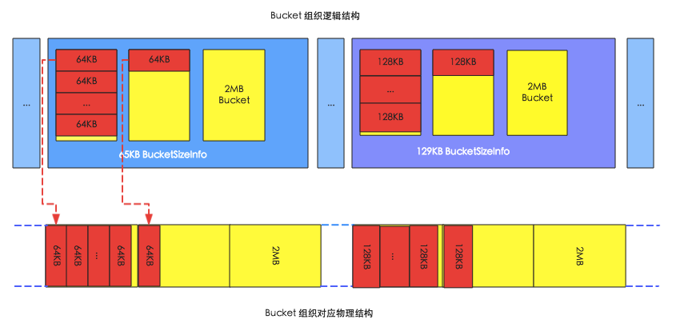
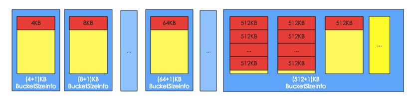
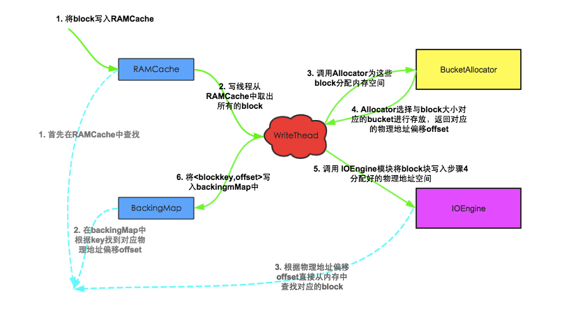

HBase Cache 介绍
HBase在实现中提供了两种缓存结构：MemStore和BlockCache。
MemStore称为写缓存，HBase执行写操作首先会将数据写入MemStore，并顺序写入HLog，等满足一定条件后统一将MemStore中数据刷新到磁盘，这种设计可以极大地提升HBase的写性能。不仅如此，MemStore对于读性能也至关重要，假如没有MemStore，读取刚写入的数据就需要从文件中通过IO查找，这种代价显然是昂贵的。
BlockCache称为读缓存，HBase会将一次文件查找的Block块缓存到Cache中，以便后续同一请求或者邻近数据查找请求，可以直接从内存中获取，避免昂贵的IO操作。
MemStore
HBase是基于LSM-Tree模型的，所有的数据更新插入操作都首先写入MemStore中（同时会顺序写到日志HLog中），达到指定大小之后再将这些修改操作批量写入磁盘，生成一个新的HFile文件，这种设计可以极大地提升HBase的写入性能；另外，HBase为了方便按照RowKey进行检索，要求HFile中数据都按照RowKey进行排序，MemStore数据在flush成为HFile之前会进行一次排序，将数据有序化；还有，根据局部性原理，新写入的数据会更大概率被读取，因此HBase在读取数据的时候首先检查请求的数据是否在MemStore，写缓存未命中的话再到读缓存中查找，读缓存还未命中才会到HFile文件中查找，最终返回merged的一个结果给用户。可见，MemStore无论是对HBase的写入性能还是读取性能都至关重要。在MemStore相关的数据操作中，flush操作是MemStore最核心的操作。
MemStore Flush触发条件
HBase会在如下几种情况下触发flush操作，这里需要注意的是MemStore的最小flush单元是HRegion而不是单个MemStore。因此如果一个HRegion中MemStore过多，每次flush的开销必然会很大，故建议进行表设计的时候尽可能的减少ColumnFamily的个数。
MemStore级别限制
当Region中任意一个MemStore的大小达到了上限（hbase.hregion.memstore.flush.size，默认128MB），会触发MemStore刷新。
Region级别限制
当Region中所有MemStore的大小总和达到了上限（hbase.hregion.memstore.block.multiplier * hbase.hregion.memstore.flush.size，默认 2* 128M = 256M），会触发memstore刷新。
Region Server级别限制
当一个Region Server中所有MemStore的大小总和达到了上限（hbase.regionserver.global.memstore.upperLimit * hbase_heapsize，默认 40%的JVM内存使用量），会触发部分MemStore刷新。
Flush顺序是按照MemStore由大到小执行，先Flush MemStore最大的Region，再执行次大的，直至总体MemStore内存使用量低于阈值（hbase.regionserver.global.memstore.lowerLimit * hbase_heapsize，默认 38%的JVM内存使用量）。
HLog数量达到上限
当一个Region Server中HLog数量达到上限（可通过参数hbase.regionserver.maxlogs配置）时，系统会选取最早的一个 HLog对应的一个或多个Region进行flush。
HBase定期刷新MemStore
默认周期为1小时，确保MemStore不会长时间没有持久化。为避免所有的MemStore在同一时间都进行flush导致的问题，定期的flush操作有20000左右的随机延时。
手动执行flush
用户可以通过命令 flush 'tablename' 或者flush 'region name'分别对一张表或者一个Region进行flush操作。
MemStore Flush流程
为了减少flush过程对读写的影响，HBase采用了类似于两阶段提交的方式，将整个flush过程分为三个阶段：
prepare阶段
遍历当前Region中的所有MemStore，将MemStore中当前数据集kvset做一个快照snapshot，然后再新建一个新的kvset。后期的所有写入操作都会写入新的kvset中，而整个flush阶段读操作会首先分别遍历kvset和snapshot，如果查找不到再会到HFile中查找。prepare阶段需要加一把updateLock对写请求阻塞，结束之后会释放该锁。因为此阶段没有任何费时操作，因此持锁时间很短。
flush阶段
遍历所有MemStore，将prepare阶段生成的snapshot持久化为临时文件，临时文件会统一放到目录.tmp下。这个过程因为涉及到磁盘IO操作，因此相对比较耗时。
commit阶段
遍历所有的MemStore，将flush阶段生成的临时文件移到指定的ColumnFamily目录下，针对HFile生成对应的StoreFile和Reader，把StoreFile添加到HStore的StoreFiles列表中，最后再清空prepare阶段生成的snapshot。
BlockCache
BlockCache是Region Server级别的，一个Region Server只有一个Block Cache，在Region Server启动的时候完成Block Cache的初始化工作。到目前为止，HBase先后实现了3种Block Cache方案，LRUBlockCache是最初的实现方案，也是默认的实现方案；HBase 0.92版本实现了第二种方案SlabCache，见HBASE-4027；HBase 0.96之后官方提供了另一种可选方案BucketCache，见HBASE-7404。 这三种方案的不同之处在于对内存的管理模式，其中LRUBlockCache是将所有数据都放入JVM Heap中，交给JVM进行管理。而后两者采用了不同机制将部分数据存储在堆外，交给HBase自己管理。这种演变过程是因为LRUBlockCache方案中JVM垃圾回收机制经常会导致程序长时间暂停，而采用堆外内存对数据进行管理可以有效避免这种情况发生。
LRUBlockCache
LRUBlockCache是HBase目前默认的BlockCache机制，实现机制比较简单。它使用一个ConcurrentHashMap管理BlockKey到Block的映射关系，缓存Block只需要将BlockKey和对应的Block放入该HashMap中，查询缓存就根据BlockKey从HashMap中获取即可。同时该方案采用严格的LRU淘汰算法，当Block Cache总量达到一定阈值之后就会启动淘汰机制，最近最少使用的Block会被置换出来。在HBase中，计算可以用来做cache的容量可以通过计算number of region servers * heap size * hfile.block.cache.size * 0.99得到。具体的实现细节方面，需要关注三点：
缓存分层策略
HBase在LRU缓存基础上，采用了缓存分层设计，将整个BlockCache分为三个部分：single-access、mutil-access和inMemory，其中每部分分别占到整个BlockCache大小的25%、50%、25%。 一次随机读中，一个Block块从HDFS中加载出来之后首先放入single区，后续如果有多次请求访问到这块数据的话，就会将这块数据移到mutil-access区。而in-memory区表示数据可以常驻内存，一般用来存放访问频繁、数据量小的数据，比如元数据，用户也可以在建表的时候通过设置列族属性IN-MEMORY= true将此列族放入in-memory区（设置的时候应特别注意，确保此列族数据量很小且访问频繁，否则有可能会将hbase:meta元数据挤出内存，严重影响所有业务性能）。 无论哪个区，系统都会采用严格的Least-Recently-Used算法，当BlockCache总量达到一定阈值之后就会启动淘汰机制，最少使用的Block会被置换出来，为新加载的Block预留空间。
LRU淘汰算法实现
系统在每次cache block时将BlockKey和Block放入HashMap后都会检查BlockCache总量是否达到阈值，如果达到阈值，就会唤醒淘汰线程对Map中的Block进行淘汰。系统设置三个MinMaxPriorityQueue队列，分别对应上述三个分层，每个队列中的元素按照最近最少被使用排列，系统会优先poll出最近最少使用的元素，将其对应的内存释放。可见，三个分层中的Block会分别执行LRU淘汰算法进行淘汰。
LRU方案优缺点
LRU方案使用JVM提供的HashMap管理缓存，简单有效。但随着数据从single-access区晋升到mutil-access区，基本就伴随着对应的内存对象从young区到old区，晋升到old区的Block被淘汰后会变为内存垃圾，最终由CMS回收掉（Conccurent Mark Sweep，一种标记清除算法），然而这种算法会带来大量的内存碎片，碎片空间一直累计就会产生臭名昭著的Full GC。尤其在大内存条件下，一次Full GC很可能会持续较长时间，甚至达到分钟级别。大家知道Full GC是会将整个进程暂停的（称为stop-the-wold暂停），因此长时间Full GC必然会极大影响业务的正常读写请求。也正因为这样的弊端，SlabCache方案和BucketCache方案才会横空出世。
BucketCache
相比LRUBlockCache而言，BucketCache实现相对比较复杂。它没有使用JVM 内存管理算法来管理缓存，而是自己对内存进行管理，因此不会因为出现大量碎片导致Full GC的情况发生。本小节主要介绍BucketCache的具体实现方式（包括BucketCache的内存组织形式、缓存写入读取流程等）以及如何配置使用BucketCache。
内存组织形式
下图是BucketCache的内存组织形式图，其中上面部分是逻辑组织结构，下面部分是对应的物理组织结构。

HBase启动之后会在内存中申请大量的bucket，如上图中黄色矩形所示，每个bucket的大小默认都为2MB。每个bucket会有一个baseoffset变量和一个size标签，其中baseoffset变量表示这个bucket在实际物理空间中的起始地址，因此block的物理地址就可以通过baseoffset和该block在bucket的偏移量唯一确定；而size标签表示这个bucket可以存放的block块的大小，比如图中左侧bucket的size标签为65KB，表示可以存放64KB的block，右侧bucket的size标签为129KB，表示可以存放128KB的block。

HBase中使用BucketAllocator类实现对Bucket的组织管理：
- HBase会根据每个bucket的size标签对bucket进行分类，相同size标签的bucket由同一个BucketSizeInfo管理，如上图，左侧存放64KB block的bucket由65KB BucketSizeInfo管理，右侧存放128KB block的bucket由129KB BucketSizeInfo管理。
- HBase在启动的时候就决定了size标签的分类，默认标签有(4+1)K、(8+1)K、(16+1)K … (48+1)K、(56+1)K、(64+1)K、(96+1)K … (512+1)K。而且系统会首先从小到大遍历一次所有size标签，为每种size标签分配一个bucket，最后所有剩余的bucket都分配最大的size标签，默认分配 (512+1)K，如上图所示。
- Bucket的size标签可以动态调整，比如64K的block数目比较多，65K的bucket被用完了以后，其他size标签的完全空闲的bucket可以转换成为65K的bucket，但是至少保留一个该size的bucket。
Block缓存写入、读取流程
下图是block写入缓存以及从缓存中读取block的流程示意图，图中主要包括5个模块，其中
- RAMCache是一个存储blockkey和block对应关系的HashMap；
- WriteThead是整个block写入的中心枢纽，主要负责异步的写入block到内存空间；
- BucketAllocator在上一节详细介绍过，主要实现对bucket的组织管理，为block分配内存空间；
- IOEngine是具体的内存管理模块，主要实现将block数据写入对应地址的内存空间；
- BackingMap也是一个HashMap，用来存储blockKey与对应物理内存偏移量的映射关系，用来根据blockkey定位具体的block；其中紫线表示cache block流程，绿线表示get block流程。

Block缓存写入流程
- 将block写入RAMCache。实际实现中，HBase设置了多个RAMCache，系统首先会根据blockkey进行hash，根据hash结果将block分配到对应的RAMCache中；
- WriteThead从RAMCache中取出所有的block。和RAMCache相同，HBase会同时启动多个WriteThead并发的执行异步写入，每个WriteThead对应一个RAMCache；
- 每个WriteThead会将遍历RAMCache中所有block数据，分别调用bucketAllocator为这些block分配内存空间；
- BucketAllocator会选择与block大小对应的bucket进行存放（具体细节可以参考上节‘内存组织形式’所述），并且返回对应的物理地址偏移量offset；
- WriteThead将block以及分配好的物理地址偏移量传给IOEngine模块，执行具体的内存写入操作；
- 写入成功后，将类似<blockkey,offset>这样的映射关系写入BackingMap中，方便后续查找时根据blockkey可以直接定位；
Block缓存读取流程
- 首先从RAMCache中查找。对于还没有来得及写入到bucket的缓存block，一定存储在RAMCache中；
- 如果在RAMCache中没有找到，再在BackingMap中根据blockKey找到对应物理偏移地址offset；
- 根据物理偏移地址offset可以直接从内存中查找对应的block数据；
BucketCache工作模式
BucketCache默认有三种工作模式：heap、offheap和file；这三种工作模式在内存逻辑组织形式以及缓存流程上都是相同的，不同的是三者对应的最终存储介质有所不同，即上述所讲的IOEngine有所不同。
heap模式和offheap模式都使用内存作为最终存储介质，内存分配查询也都使用Java NIO ByteBuffer技术，不同的是，heap模式分配内存会调用byteBuffer.allocate方法，从JVM提供的heap区分配，而后者会调用byteBuffer.allocateDirect方法，直接从操作系统分配。这两种内存分配模式会对HBase实际工作性能产生一定的影响。影响最大的无疑是GC，相比heap模式，offheap模式因为内存属于操作系统，所以基本不会产生CMS GC，也就在任何情况下都不会因为内存碎片导致触发Full GC。除此之外，在内存分配以及读取方面，两者性能也有不同，比如，内存分配时heap模式需要首先从操作系统分配内存再拷贝到JVM heap，相比offheap直接从操作系统分配内存更耗时；但是反过来，读取缓存时heap模式可以从JVM heap中直接读取，而offheap模式则需要首先从操作系统拷贝到JVM heap再读取，显得后者更费时。
file模式和前面两者不同，它使用Fussion-IO或者SSD等作为存储介质，相比昂贵的内存，这样可以提供更大的存储容量，因此可以极大地提升缓存命中率。
SlabCache
为了解决LRUBlockCache方案中因为JVM垃圾回收导致的服务中断，SlabCache方案使用Java NIO DirectByteBuffer技术实现了堆外内存存储，不再由JVM管理数据内存。默认情况下，系统在初始化的时候会分配两个缓存区，分别占整个BlockCache大小的80%和20%，每个缓存区分别存储固定大小的Block块，其中前者主要存储小于等于64K大小的Block，后者存储小于等于128K Block，如果一个Block太大就会导致两个区都无法缓存。和LRUBlockCache相同，SlabCache也使用Least-Recently-Used算法对过期Block进行淘汰。和LRUBlockCache不同的是，SlabCache淘汰Block的时候只需要将对应的bufferbyte标记为空闲，后续cache对其上的内存直接进行覆盖即可。
线上集群环境中，不同表不同列族设置的BlockSize都可能不同，很显然，默认只能存储两种固定大小Block的SlabCache方案不能满足部分用户场景，比如用户设置BlockSize = 256K，简单使用SlabCache方案就不能达到这部分Block缓存的目的。因此HBase实际实现中将SlabCache和LRUBlockCache搭配使用，称为DoubleBlockCache。一次随机读中，一个Block块从HDFS中加载出来之后会在两个Cache中分别存储一份；缓存读时首先在LRUBlockCache中查找，如果Cache Miss再在SlabCache中查找，此时如果命中再将该Block放入LRUBlockCache中。
经过实际测试，DoubleBlockCache方案有很多弊端。比如SlabCache设计中固定大小内存设置会导致实际内存使用率比较低，而且使用LRUBlockCache缓存Block依然会因为JVM GC产生大量内存碎片。因此在HBase 0.98版本之后，该方案已经被不建议使用。
压缩BlockCache
HBASE-11331引入了延迟解压缩BlockCache的功能，即压缩BlockCache，当该功能启用的时候，data block和encoded data block会被以存储在磁盘的文件格式存储在BlockCache中，简单来说，就是此时的BlockCache中的block会被压缩。
这么做的好处是，RegionServer可以将更多的数据存储在cache中，经过测试得出，如果使用SNAPPY压缩，其吞吐量会增加50%，平均延迟性能提升30%，于此同时，GC增加80%，CPU负载增加2%。因此是否启用该功能还是要根据应用取舍，如果应用是资源敏感性应用，那么便不是非常适合启用该功能。
启用方式通过在hbase-site.xml中设置hbase.block.data.cachecompressed=true便可。
In-memory Flush and Compaction
如果单纯的调大MemStore的Flush Size大小会导致ConcurrentSkipListMap的写入性能显著下降。因此可以将MemStore中的数据先Flush成一个Immutable的Segment，多个Immutable Segments可以在内存中进行Compaction，当达到一定阈值以后才将内存中的数据持久化成HDFS中的HFile文件。
这个功能就是In-memory Flush and Compaction，自2.0版本默认启用。
其他注意事项
在实际BlockCache部署中会采用混合部署方式，这种方式中LRUBlockCache和BucketCache一起部署，采用分级策略。简单来说 INDEX和BLOOM是存在LRUBlockCache这一层面的(L1)，DATA blocks 会被保存在 BucketCache这一次层(L2)。在HBase2.0.0之前可以通过设置hbase.bucketcache.combinedcache.enabled=false关闭这种模式，即从LRUBlockCache淘汰出来的block会存储到BucketCache中，但现在这种方式已经不可用了。